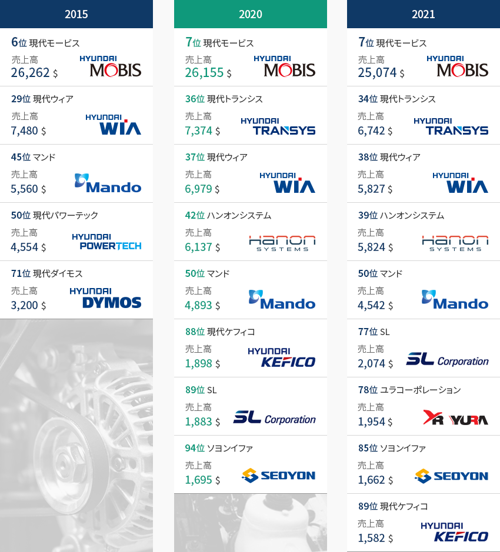
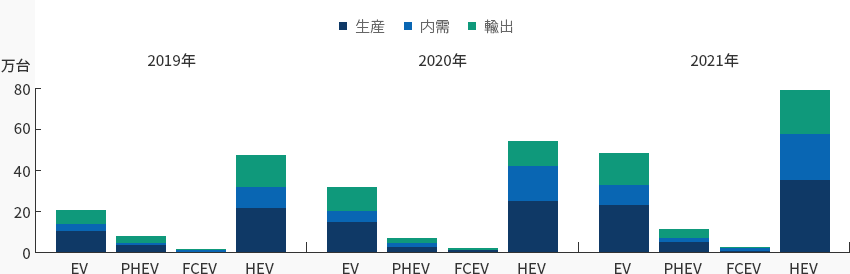
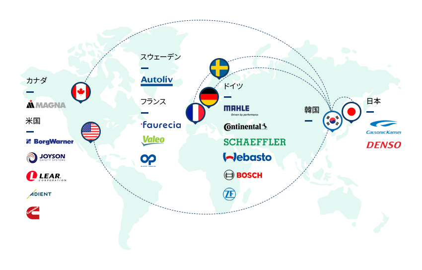
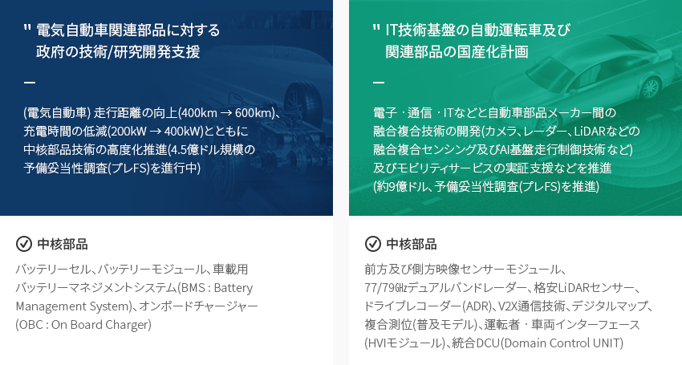
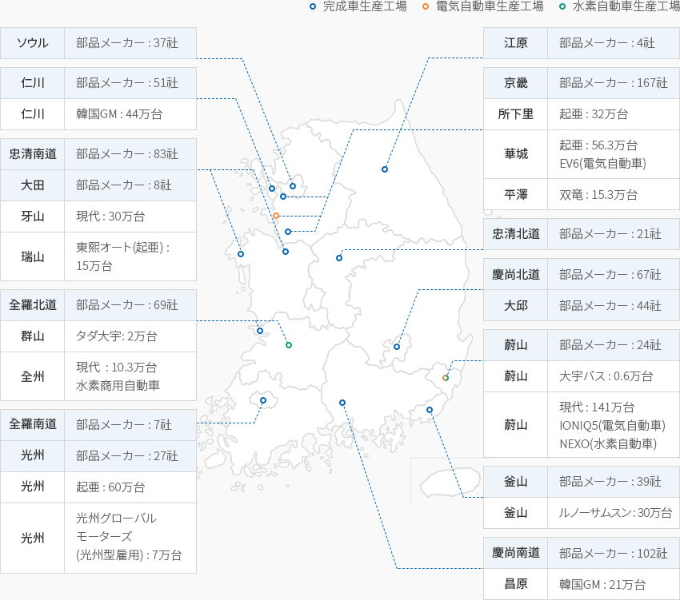

自動車部品
- Home
- Why KOREA
- 産業
- 自動車部品
自動車部品
Automotive Parts
-
年間400万台、世界5位の自動車生産能力に基づく 年間400万台、世界5位の自動車生産能力に基づく コンテンツを閉じる年間400万台、世界5位の自動車生産能力に基づく 競争力のある部品産業基盤を保有大韓民国は年間400万台以上の自動車が生産可能な世界5位の自動車生産大国である。
韓国で生産される自動車の半分は韓国の国内内需市場で販売され 残りの半分は全世界に輸出されるという輸出主導の環境である。
2021年は自動車用半導体不足により計346万台の生産となっており、その60%に該当する205万台を輸出した。
韓国は安定した社会構造とインフラで新型コロナの危機からいち早く回復しており、年間180万台という
世界10位の強固な内需市場がそれを支えている。韓国の部品メーカーはその生産量にふさわしい世界的な企業として成長しており、有名な海外企業は
ほとんど韓国で拠点工場を運営している。 2021年の世界100大自動車部品メーカー順位(売上高基準)には
韓国の部品メーカー9社が入っている。 これら9社の売上高は合計552億ドルで100大部品メーカーの売上の7.4%を占める。
2020年は8社だったのが1社増えたことになる。 특特に、ユラコーポレーションは電装モジュール、配線システムなどを供給するメーカーで、電気自動車への転換を受けて
大幅に売上が上昇し、‘21年78位に新しくランクインした。「世界100大自動車部品メーカー中の韓国企業の順位」(単位：百万ドル)世界100大自動車部品メーカー中の韓国企業の順位 年(2010,2015,2019) 会社名, 納品額 2015 2020 2021 会社名 納品額 会社名 納品額 会社名 納品額 現代モービス(6位) 26,262 現代モービス(7位) 26,262 現代モービス(7位) 25,074 現代ウィア(29位) 7,480 現代トランシス(36位) 7,374 現代ウィア(34位) 6,742 マンド(45位) 5,560 現代ウィア(37位) 6,979 マンド(38位) 5,827 現代パワーテック(50位) 4,554 ハンオンシステム(42位) 6,137 現代ダイモス(39位) 5,824 現代ダイモス(71) 3,200 マンド(50位) 4,893 マンド(50位) 4,542 現代ケフィコ(88位) 1,898 SL(77位) 2,074 SL(89位) 1,883 ユラコーポレーション(78位) 1,954 ソヨンイファ(94位) 1,695 ソヨンイファ(85位) 1,662 現代ケフィコ(89位) 1,582  ※ 資料：Automotive News
※ 資料：Automotive News -
大韓民国の経済をリードする自動車産業, 未来自動車への迅速な転換 コンテンツを開く大韓民国の経済をリードする自動車産業, 未来自動車への迅速な転換韓国の自動車産業は半導体産業とともに韓国の製造業を代表する産業であり、生産額、雇用、輸出などの
主要指標に占める割合は10%を上回っている。「韓国自動車産業の地位」韓国自動車産業の地位 企業数, 雇用, 生産額, 付加価値, 輸出, 貿易収支 企業数
(社)雇用
(千人)生産額
(十億ウォン)付加価値
(十億ウォン)輸出
(百万ドル)貿易収支
(百万ドル)完成車産業 34 89,130 92,920 23,825 46,466 32,216 割合 0.00% 3.00% 6.00% 4.30% 7.20% 自動車部品産業 4,480 247,271 103,793 31,567 22,776 16,540 割合 6.40% 8.40% 6.70% 5.70% 3.50% ※ 資料 : 統計庁、KITA※ 注- 企業数、雇用、生産額、付加価値は2019年、輸出、貿易収支は2020年基準
- 割合は製造業内の割合。但し、輸出は輸出全体に占める割合
完成車と部品産業で構成された韓国の自動車産業は、韓国の総雇用の11.4%、生産総額の12.7%、輸出総額の10.5%を占めている。
輸出主導産業である自動車産業の‘21年基準の貿易収支は487億ドル(約57兆ウォン)である。(単位 : 千台)自動車産業の動向 区分, 年 区分 2011 2012 2013 2014 2015 2016 2017 2018 2019 2020 生産 4,657 4,562 4,521 4,524 4,556 4,229 4,115 4,029 3,951 3,507 内需 1,586 1,532 1,544 1,662 1,842 1,836 1,807 1,813 1,780 1,885 (単位 : 億ドル)自動車産業の動向 区分, 年 区分 2011 2012 2013 2014 2015 2016 2017 2018 2019 2020 輸出 450 468 482 484 452 402 417 409 431 374.1 輸入 42 51 62 90 107 105 109 121 120 130.7 ※ 出処：自動車産業協会「自動車統計月報」貿易協会統計
※ 注釈：生産及び内需：完成車
※ 注釈：輸出入金額：MTI741、MTI742合算基準世界のトレンドに合わせて韓国の自動車産業も迅速に電動化している。ハイブリッド(HEV)、プラグインハイブリッド(PHEV)、電気自動車(EV)、水素自動車(FCEV)で代表されるエコカーの
割合が生産量基準で2019年9.4%から2020年12.7%に、2021年には18.6%まで増加している。韓国で販売される台数基準では、2019年7.9%から2020年11.9%、2021年には20%を超えている。
純粋なエコカーであるEVとFCEVだけをみても、内需市場で2019年2%から2021年には6%を超えた。
今後、エコカーへの転換はより速くなるという予測が多い。特に現代自動車グループは世界で唯一、乗用車、商用車部門を揃えた水素自動車量産企業である。
そのため、水素関連技術をもつ多くの海外企業が韓国の水素産業に大きな関心を示している。「韓国の電気自動車の生産及び販売動向」
(単位 : 台)韓国の電気自動車の生産及び販売動向 区分, 年 2019 2020 2021 生産 内需 輸出 生産 内需 輸出 生産 内需 輸出 EV(電気自動車) 103,437 32,052 76,099 152,174 44,617 119,718 230,177 96,666 154,014 PHEV (プラグインハイブリッド自動車) 39,831 5,255 31,435 30,523 10,702 26,065 52,600 19,701 37,957 FCEV (水素燃料電池電気自動車) 6,020 4,194 788 6,594 5,789 1,041 9,639 8,502 1,121 HEV (ハイブリッド電気自動車) 220,699 98,810 150,615 254,725 163,984 124,503 352,271 222,869 211,807 ※ 資料 : 自動車産業協会 -
グローバル自動車部品メーカーの 持続的な投資 コンテンツを開くグローバル自動車部品メーカーの 持続的な投資世界の100大自動車部品メーカーのほとんどが韓国に進出しており、主に高い技術力を要する中核部品を中心に供給している。
特に最近2年間、電気自動車モーター/バッテリー、水素自動車フュエルセル/タンク、自動運転センサーなどの未来自動車部品の生産に向けた
持続的な投資が行われている。韓国政府は未来エコカー産業の育成を積極的に支援しており、
韓国は未来自動車の生産拠点として成長している。
-
グローバル未来自動車市場をリードするための 政府支援政策の強化 コンテンツを開くグローバル未来自動車市場をリードするための 政府支援政策の強化韓国政府は電気自動車、水素自動車、自動運転車など未来自動車への転換のために様々な戦略を立てている。
電気自動車販売補助金の拡大、電気/水素ステーショントの構築支援、未来自動車に転換する部品メーカーへの支援など多様な支援策が設けられている。
また、2021年2月、世界で初めて水素自動車法を施行し、水素自動車産業の発展において先頭に立っている。電気自動車関連部品に対する政府の技術/研究開発支援(電気自動車) 走行距離の向上(400km → 600km)、充電時間の低減(200kW → 400kW)とともに中核部品技術の高度化推進(4.5億ドル規模の予備妥当性調査(プレFS)を進行中)中核部品 : バッテリーセル、バッテリーモジュール、車載用バッテリーマネジメントシステム(BMS : Battery Management System)、オンボードチャージャー(OBC : On Board Charger)IT技術基盤の自動運転車及び関連部品の国産化計画電子ㆍ通信ㆍITなどと自動車部品メーカー間の融合複合技術の開発(カメラ、レーダー、LiDARなどの融合複合センシング及びAI基盤走行制御技術など)及びモビリティサービスの実証支援などを推進(約9億ドル、予備妥当性調査(プレFS)を推進)中核部品 : 前方及び側方映像センサーモジュール、77/79㎓デュアルバンドレーダー、格安LiDARセンサー、ドライブレコーダー(ADR)、V2X通信技術、デジタルマップ、複合測位(普及モデル)、運転者ㆍ車両インターフェース(HVIモジュール)、統合DCU(Domain Control UNIT)
-
地域別の特化戦略を通じた 未来自動車への転換 コンテンツを開く地域別の特化戦略を通じた 未来自動車への転換韓国の自動車産業は比較的、全国的に分布しており、首都圏を含む西海岸地域クラスター、
蔚山を中心とした東南圏クラスター、光州・群山などの湖南圏クラスターに分けられる。首都圏には起亜自動車、韓国GMの完成車工場があり、現代起亜自動車の南陽研究所をはじめとする研究所及び工場、
自動運転車専用実験都市(K-City)がある。 忠清圏は124の1次協力会社が天安、牙山、唐津地域を中心に
集中的に分布しており、東南圏は現代自動車、ルノーサムスン自動車、韓国GMなど国内の主要完成車メーカーと337の1次部品メーカーが
クラスターを形成している。「 韓国の完成車工場及び1次部品メーカー分布図 」韓国の完成車工場及び1次部品メーカー分布図- ソウル:部品メーカー 37社
- 江原:部品メーカー 4社
- 仁川:部品メーカー 51社
- 仁川:韓国GM 44万台
-
京畿:部品メーカー 167社
- 所下里:起亜 32万台
- 華城:起亜 56.3万台, EV6(電気自動車)
- 平澤:双竜 15.3万台
- 忠清南道:部品メーカー 83社
- 大田:部品メーカー 8社
- 牙山:現代 30万台
- 瑞山:東熙オート(起亜) 15万台
- 忠清北道:部品メーカー 21社
-
全羅北道:部品メーカー 69社
- 群山:タダ大宇 2万台
- 全州:現代 10.3万台 水素商用自動車
- 慶尚北道:部品メーカー 67社
- 大邱:部品メーカー 44社
- 전남:部品メーカー 7社
-
光州:部品メーカー 27社
- 光州:起亜 60万台
- 光州:光州グローバルモーターズ (光州型雇用 : 7万台)
-
蔚山:部品メーカー 24社
- 蔚山:大宇バス 0.5万台
- 蔚山:現代 141万台, IONIQ5(電気自動車), NEXO(水素自動車)
-
釜山:部品メーカー 39社
- 釜山:ルノーサムスン 30万台
-
慶尚南道:部品メーカー 102社
- 昌原: 韓国GM : 21万台
※ 資料 : KAMA、KAICA
※ 注 : 2020年の完成車生産能力、1次部品メーカー基準


Invest KOREA
運送用機械PM
イ・サンフン
基幹産業誘致チーム
T.+82-2-3460-7714
おすすめの立地情報
産業団地情報
[Chungcheongnam-do Seosan City] Myeongcheon Automobile Complex
Click [Go to Detailed Information] to go to the relevant information screen of
Smart K-Factory service of Industrial Complex Corporation.
-
Complex nameMyeongcheon Automobile Complex
-
Initial designation date2003.07.21
-
Designated area(m2)142,673
-
ManagementChungcheongnam-do Seosan City
-
Nearby RailwayHongseong Station
-
Distance from station(km)50
-
Nearby AirportGunsan Airport
-
Distance from airport(km)124
-
Industrial water Supply capacity(ton/day)254(㎥/day)
-
Affiliation local governmentChungcheongnam-do Seosan City
-
Population175,272
産業団地情報
[Gwangju Metropolitan City Gwangsan-gu] Pyeong-dong (Woljeon Small and
Medium-sized Business Cooperation for Foreigners)
Click [Go to Detailed Information] to go to the relevant information screen of
Smart K-Factory service of Industrial Complex Corporation.
-
Complex namePyeong-dong (Woljeon Small and Medium-sized Business Cooperation for Foreigners)
-
Initial designation date2013.05.15
-
Designated area(m2)99,060
-
ManagementKorea Industrial Complex Corporation
-
Nearby RailwayGwangju Station
-
Distance from station(km)21
-
Nearby AirportGwangju Airport
-
Distance from airport(km)7
-
Industrial water Supply capacity(ton/day)-
-
Affiliation local governmentGwangju Metropolitan City Gwangsan-gu
-
Population1,454,154
産業団地情報
[Chungcheongnam-do Seosan City] Seosan Auto Valley General Industrial
Complex [formerly: Seosan
Click [Go to Detailed Information] to go to the relevant information screen of
Smart K-Factory service of Industrial Complex Corporation.
-
Complex nameSeosan Auto Valley General Industrial Complex [formerly: Seosan
-
Initial designation date1997.01.24
-
Designated area(m2)3,989,547
-
ManagementChungcheongnam-do Seosan City
-
Nearby RailwaySapgyo Station
-
Distance from station(km)49
-
Nearby AirportCheongju International Airport
-
Distance from airport(km)123
-
Industrial water Supply capacity(ton/day)7,432(㎥/day)
-
Affiliation local governmentChungcheongnam-do Seosan City
-
Population175,272
産業団地情報
[Ulsan Metropolitan City Buk-gu] Dalcheon Agricultural Industrial
Complex
Click [Go to Detailed Information] to go to the relevant information screen of
Smart K-Factory service of Industrial Complex Corporation.
-
Complex nameDalcheon Agricultural Industrial Complex
-
Initial designation date1997.03.11
-
Designated area(m2)259,634
-
ManagementUlsan Metropolitan City Buk-gu
-
Nearby RailwayHogye Station
-
Distance from station(km)4
-
Nearby AirportUlsan Airport
-
Distance from airport(km)8
-
Industrial water Supply capacity(ton/day)-
-
Affiliation local governmentUlsan Metropolitan City Buk-gu
-
Population1,140,310
産業団地情報
[Gangwon-do Wonju City] Wonju Automobile Component General Industrial
Complex
Click [Go to Detailed Information] to go to the relevant information screen of
Smart K-Factory service of Industrial Complex Corporation.
-
Complex nameWonju Automobile Component General Industrial Complex
-
Initial designation date2008.07.10
-
Designated area(m2)92,917
-
ManagementGangwon-do Wonju City
-
Nearby RailwayDonghwa Station
-
Distance from station(km)5
-
Nearby AirportWonju Airport
-
Distance from airport(km)25
-
Industrial water Supply capacity(ton/day)-
-
Affiliation local governmentGangwon-do Wonju City
-
Population352,964
産業団地情報
[Jeollabuk-do Wanju County] Wanju Techno Valley General Industrial
Complex
Click [Go to Detailed Information] to go to the relevant information screen of
Smart K-Factory service of Industrial Complex Corporation.
-
Complex nameWanju Techno Valley General Industrial Complex
-
Initial designation date2010.12.31
-
Designated area(m2)1,311,399
-
ManagementJeollabuk-do Wanju County
-
Nearby RailwaySamrye Station
-
Distance from station(km)11
-
Nearby AirportGunsan Airport
-
Distance from airport(km)62
-
Industrial water Supply capacity(ton/day)4,792(㎥/day)
-
Affiliation local governmentJeollabuk-do Wanju County
-
Population91,741